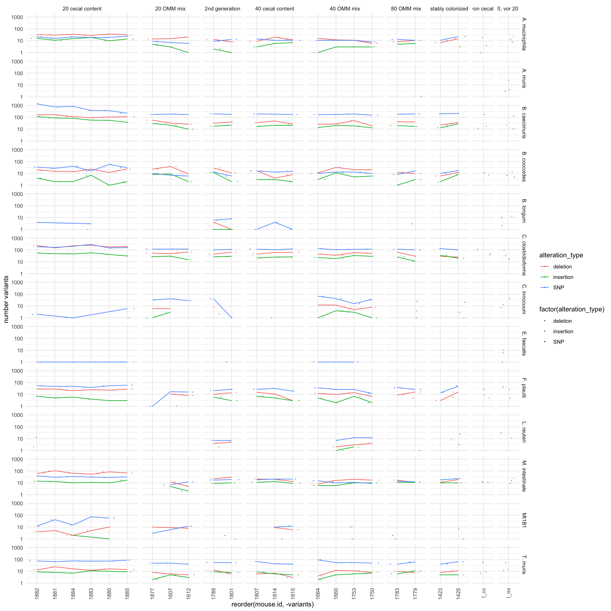

Section 4 Allele frequency
4.1 major allele frequency
p <- ggplot(dat, aes(x = majorAF, y = mouse.id))
p <- p + ggridges::geom_density_ridges(jittered_points = TRUE, position = ggridges::position_points_jitter(width = 0.01,
height = 0), point_shape = "|", point_size = 1, point_alpha = 0.5, alpha = 0.1)
p <- p + theme_classic()
# p <- p + facet_grid(phase ~., space = 'free', scales= 'free')
p <- p + theme(strip.background = element_blank())
p <- p + xlab("Major allele frequency") + ylab("Count")
p## Picking joint bandwidth of 0.0632